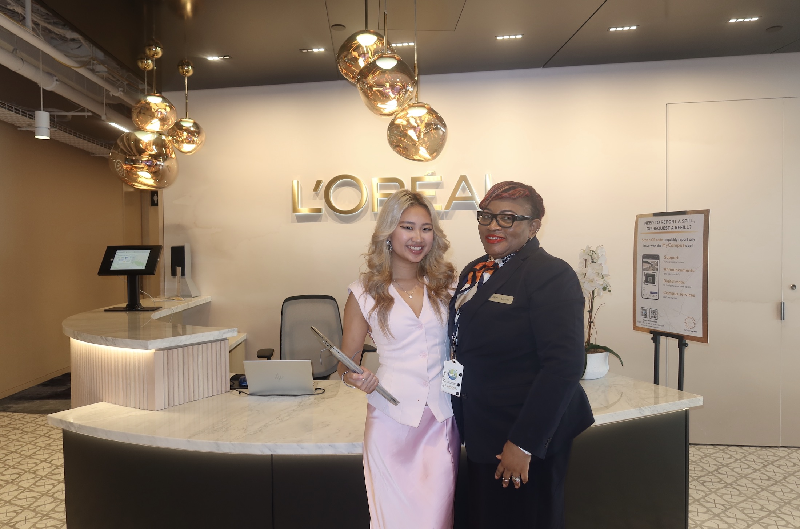
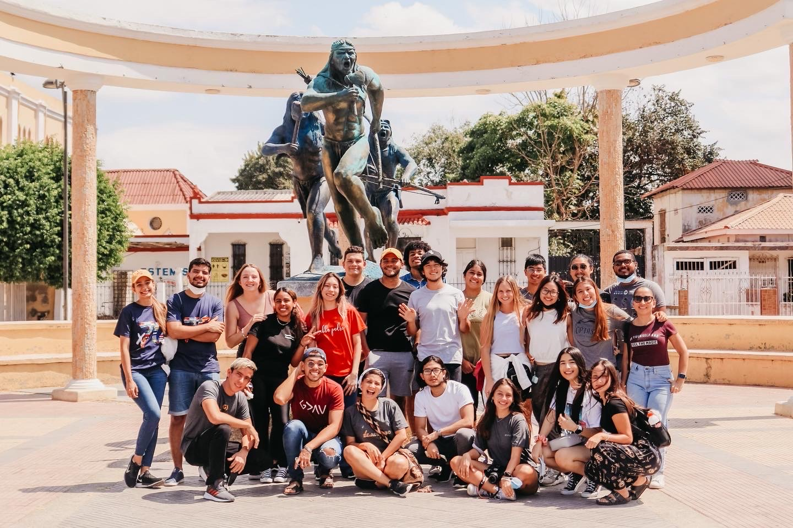
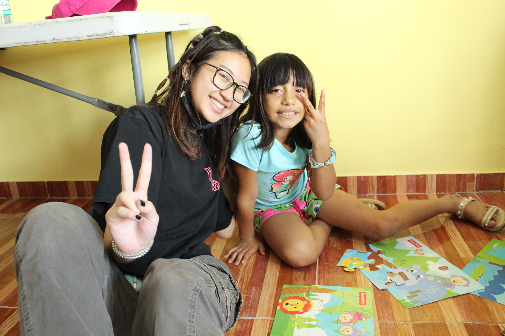
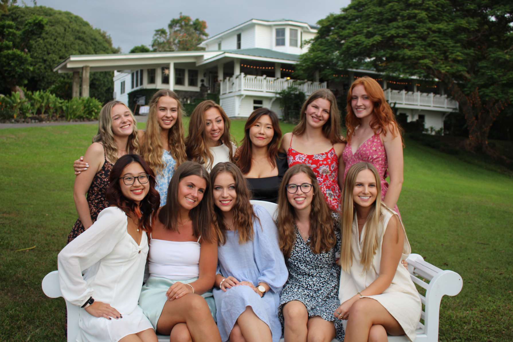

Extern
Drove full-cycle partnership outreach and closed high-impact collaborations that expanded student access while improving outbound efficiency with AI-assisted workflows.
Portfolio
I am Victoria Nguyen. I turn ideas into practical impact through hands-on work, leadership, and continuous growth.

Drove full-cycle partnership outreach and closed high-impact collaborations that expanded student access while improving outbound efficiency with AI-assisted workflows.

Built and scaled a new innovation fellowship model by leading partner development, digital outreach, and cross-sector collaboration with university and state stakeholders.

Turned market intelligence and account operations into executive-ready recommendations that strengthened omnichannel strategy and expanded engagement in underserved segments.

Translated campaign performance data into ROI-focused marketing recommendations and stakeholder communications that improved planning clarity and execution alignment.

Lead a 68-member chapter and a 7-person executive board while managing a $10K budget and driving recruitment strategies that increased outcomes by 40%.

Analyze consumer staples opportunities with Bloomberg and IBISWorld research and collaborate with a 40-analyst team to support decisions for a $415K portfolio.






Traveled internationally, built practical skills through independent projects and networking, and gained clear direction for long-term career goals.